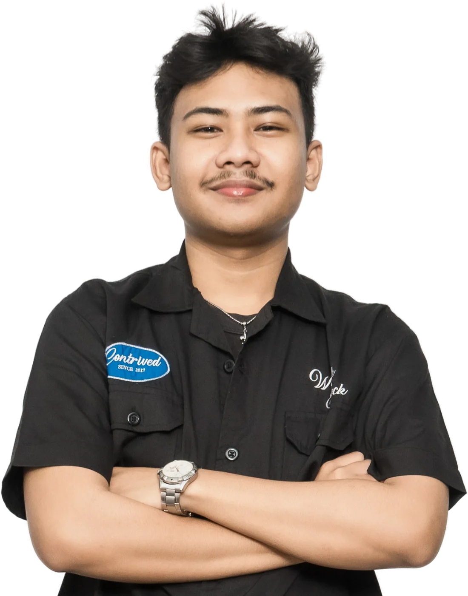
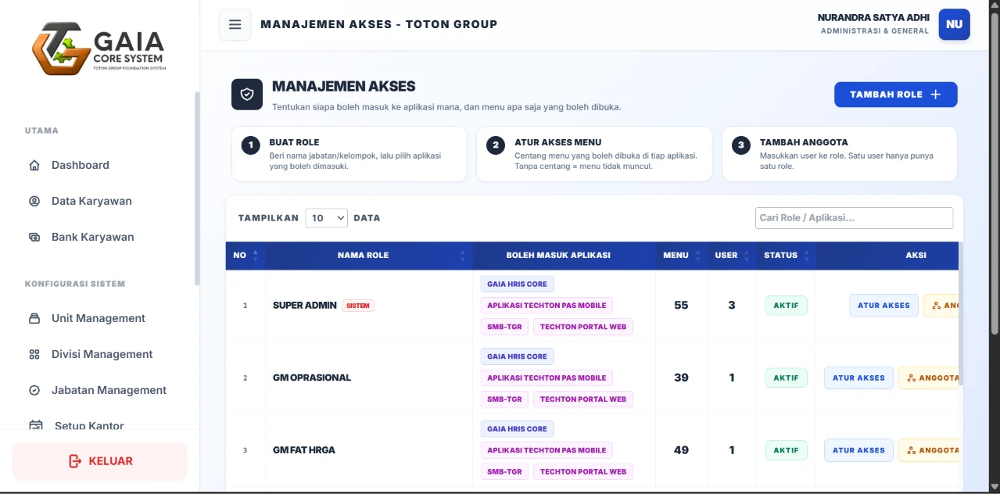
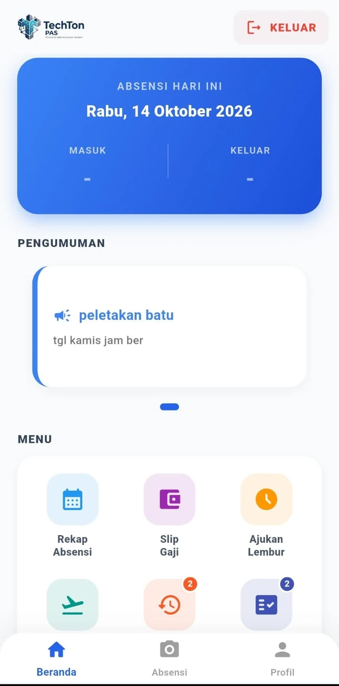
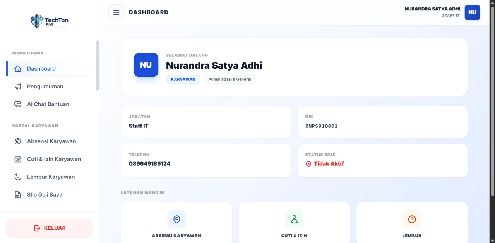
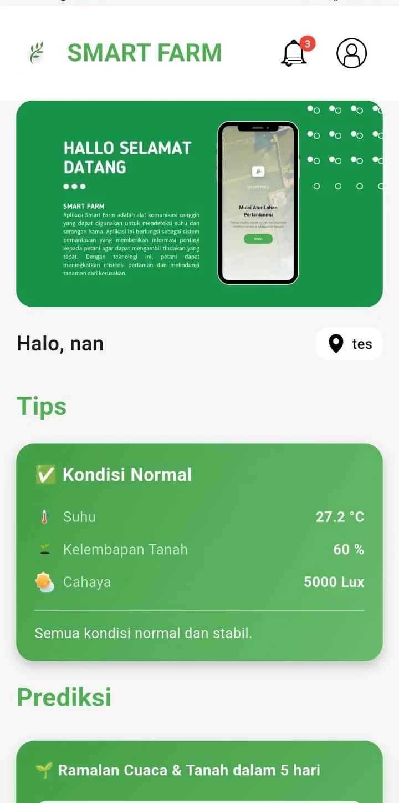
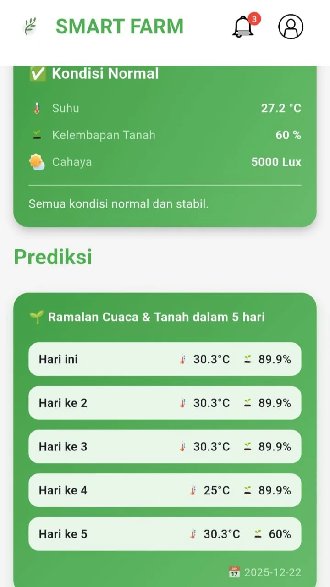
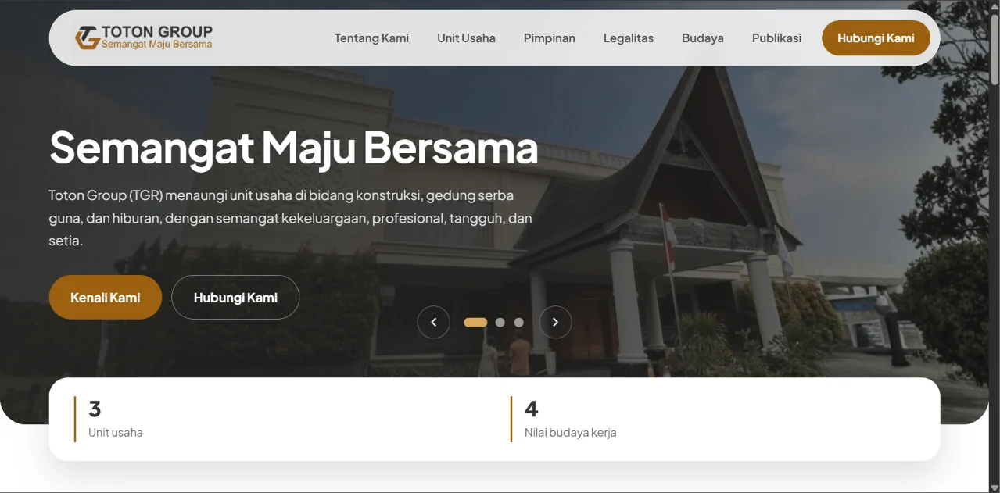
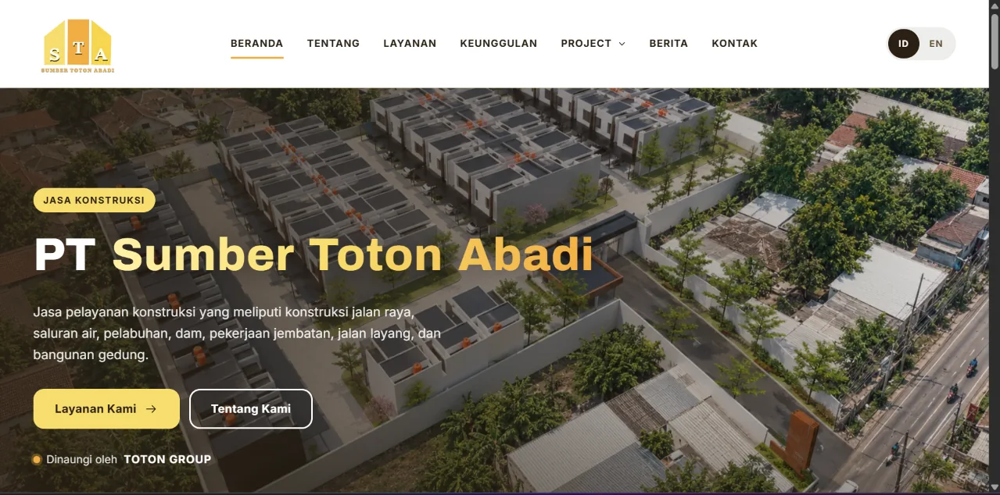
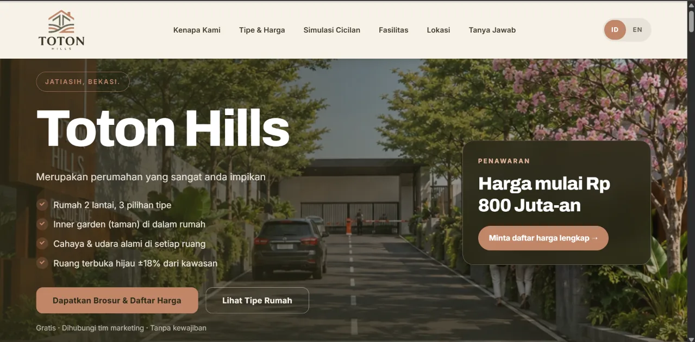

Full-Stack DeveloperInformatics Graduate
Nurandra Satya Adhi
Building digital experiences through code & innovation.
Developing scalable applications, intelligent systems, and digital solutions through technology, creativity, and thoughtful design.

- 5systems designed and built
- 3platforms: web, Android, iOS
- 1login (SSO) for many apps
- 100Google PageSpeed score
01 — About
From requirements to production. One developer, the whole stack.
I am an Informatics graduate of Universitas Islam Indonesia with a strong interest in application development, system design, enterprise solutions, and digital technology.
I have experience building web and mobile applications, developing integrated systems, managing databases, and delivering digital solutions with a user-centered design approach.
At Toton Group I design and build an end-to-end HRIS ecosystem: GAIA Core, TechTon HR Portal and TechTon PAS Mobile. I turn HR and management needs into secure, documented systems that people use every day.
HRIS & payroll systems
Attendance, leave and overtime, multi-level approval, payroll and digital payslips.
SSO & access management
One login for many apps, role-based access and a full audit trail.
Android & iOS apps
Flutter apps with biometric login and secure, tested APIs.
Company websites + CMS
Fast, responsive sites your team can update without a developer.
Education
S1 Informatics, Universitas Islam Indonesia, Oct 2022 – Jan 2026. GPA 3.63 / 4.00. English test (CEPT) score 500.
Based in
Yogyakarta, Indonesia
Focus areas
- Full-stack web development
- Enterprise applications
- Mobile applications
- System architecture & design
- Database management
- UI/UX & digital experience
- IoT & smart systems
02 — Selected work
Real systems, shipped to production.
Featured projects
Gaia Core & Enterprise HRIS
One platform for employee data, user identity and Single Sign-On across every company application.

02TechTon PAS Mobile
An employee self-service app for attendance, leave and payslips on Android and iOS, built with Flutter.

03TechTon HR Portal
A web HRIS for HR teams: attendance, leave and overtime approval, and payroll in one place.

04Smart Farming IoT
A mobile app that monitors farmland from IoT sensors, designed for traditional farmers. Published in a scientific journal.


Company websites · Toton Group
SMB-TGR Website & SSO Portal
The Toton Group website with an easy CMS and a portal to per-division applications. Google PageSpeed 100.

06STA — PT Sumber Toton Abadi
Bilingual corporate website for the construction services company under Toton Group.

07Toton Hills
Marketing website for a two-storey residential development in Jatiasih, Bekasi, with an installment simulator.

03 — Skills & technologies
The tools behind the systems.
Languages
- PHP
- Java
- JavaScript
- Python
- Dart
- HTML5
- CSS3
- SQL
Frameworks
- Flutter
- React
- Next.js
- Node.js
- Laravel
- Bootstrap
- Tailwind CSS
- jQuery
- Native JavaScript
Data & infrastructure
- MySQL
- MariaDB
- PostgreSQL
- Git
- GitHub
- REST API
- OAuth 2.0
- OpenID Connect
Tools & design
- Figma
- VS Code
- Android Studio
- Postman
- Linux
Logos are trademarks of their respective owners, shown for identification.
04 — Experience
Built in production, backed by real experience.
Work
Staff IT, Toton Group · May 2026 – present
End-to-end internal systems, from analysis and UI/UX (Figma) to backend, integration, testing and hosting.
- Presented GAIA and TechTon PAS to upper management
- Research with the IT and HR managers on SSO and payroll
- Trained HR users and wrote system documentation
- Designed a company logo and company profile
- IT operations support: printers, network, backups, fingerprint machines
Team projects
- Prolift — gym tracker app with gamification (team of 4)
- Culturavista — cultural heritage information platform (team of 4)
- Balap Kalcer — motorbike racing game (team of 3)
Individual project
Smart Farming App — SUS usability score 86/100 and published in a scientific journal. GitHub · Journal
Business & sales
Prodaes, online thrift business I ran on my own (Feb 2024 – Nov 2025): 600+ products sold, 4.7/5 buyer rating. Sourcing, promotion, content creation and distribution.
Organization
- Unit Leader, KKN UII: team management and work programs
- Publication & Documentation staff for department and faculty competitions
- Organizing committee, Pesona Ta'aruf UII 2024
Talent & creative
Campus TikTok content talent and the Pesona Ta'aruf UII 2024 teaser, with content watched up to 74.2K times.
Strengths
Communication and presentation · Systematic problem solving · Cross-division collaboration · Fast learner · Content creation and digital marketing
05 — Contact
Let's build something great together.
Have an interesting project or opportunity? Let's connect and create something meaningful. Open to Full-Stack, Web and Mobile Developer roles and freelance projects.